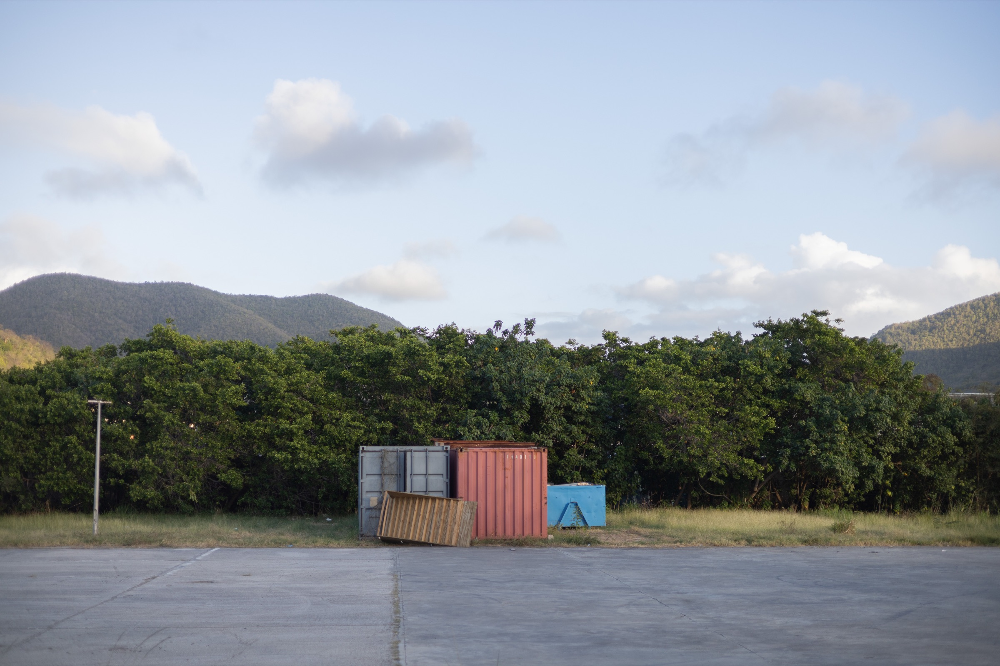

Photographer · Geneva, Switzerland
Diego Babino
Photography gives me a reason to follow my curiosity, whether it leads me to an airport, an archive, an industrial site, an object, or someone with a story worth hearing.
Information & contact ↗

